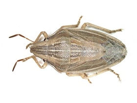
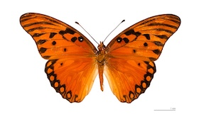
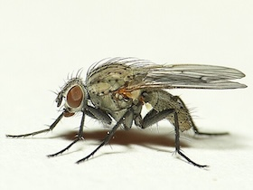

🪲 Beetles (Coleoptera)

Beetles make up the largest order of insects, with more than 350,000 known species. They are recognized by their hardened forewings (elytra) that cover and protect the delicate hindwings and abdomen. This feature gives them a tough, armored look and helps them survive in many environments, from forests to deserts. Beetles can vary greatly in size, color, and habits, ranging from tiny grain beetles to massive stag beetles with impressive jaws.
Many beetles play important ecological roles. Some, like ladybugs, are beneficial predators that feed on crop pests such as aphids. Others, such as dung beetles, recycle nutrients by breaking down animal waste. However, certain species like the Colorado potato beetle or Japanese beetle are major agricultural pests. Their diversity and adaptability make beetles one of the most successful groups of insects on Earth.
Image by URSchmidt - Own work, CC BY-SA 4.0, https://commons.wikimedia.org/w/index.php?curid=70137401.
🪳 True Bugs (Hemiptera)

True bugs include a wide range of insects such as stink bugs, cicadas, aphids, and water striders. Unlike beetles, their forewings are partly hardened and partly membranous, and they possess distinctive piercing-sucking mouthparts. These mouthparts are adapted for feeding on plant sap, blood, or other insects. Many true bugs have scent glands that produce strong odors as a defense mechanism, which is why some are called "stink bugs."
True bugs are found worldwide and occupy a variety of habitats, including plants, soil, and water. While some species are harmless or even beneficial predators, others are destructive agricultural pests that weaken plants by draining their sap. Certain bugs, like bed bugs and kissing bugs, can also affect humans directly by biting or transmitting diseases.
Image created by user B. Schoenmakers at Waarneming.nl, a source of nature observations in the Netherlands. - This image is uploaded as image number 29046158 at Waarneming.nl, a source of nature observations in the Netherlands.This tag does not indicate the copyright status of the attached work. A normal copyright tag is still required. See Commons:Licensing for more information. This site now requires authentication, however, the same image and copyright information is also available via https://world.observation.org/foto/view/29046158 since it uses the same data, CC BY 3.0, https://commons.wikimedia.org/w/index.php?curid=92410673.
🦋 Butterflies and Moths (Lepidoptera)

Butterflies and moths are known for their large, often brightly colored wings covered in tiny scales. They undergo complete metamorphosis, transitioning from egg to larva (caterpillar), then to pupa (chrysalis), and finally emerging as winged adults. Butterflies are typically diurnal (active during the day) and have clubbed antennae, while moths are usually nocturnal (active at night) and have feathery or filamentous antennae.
Both butterflies and moths play important roles in ecosystems as pollinators and as a food source for other animals. While many species are admired for their beauty, some moths can be pests, such as the clothes moth that damages fabrics.
Image by David J. Stang - Own work, CC BY-SA 4.0, https://commons.wikimedia.org/w/index.php?curid=70137399.
🦟 Flies & Mosquitoes (Diptera)

Flies and mosquitoes belong to the order Diptera, meaning "two wings." Unlike most other insects, they have only one functional pair of wings; the hind pair has evolved into tiny balancing organs called halteres. This adaptation gives them incredible agility in flight. Their mouthparts vary widely: some species have sponging mouthparts (like houseflies), while others have piercing-sucking ones (like mosquitoes).
These insects are among the most ecologically and medically significant. Many flies are decomposers, helping break down waste and recycle nutrients. Mosquitoes, however, are infamous as disease vectors, spreading malaria, dengue, and other illnesses. Despite their negative reputation, flies and mosquitoes are essential in ecosystems, serving as pollinators and as a major food source for many animals.
Image created by user Dick Belgers at Waarneming.nl, a source of nature observations in the Netherlands. This image is uploaded as image number 5105758 at Waarneming.nl, a source of nature observations in the Netherlands. This tag does not indicate the copyright status of the attached work. A normal copyright tag is still required. See Commons:Licensing for more information. CC BY 3.0, https://commons.wikimedia.org/w/index.php?curid=27659589.